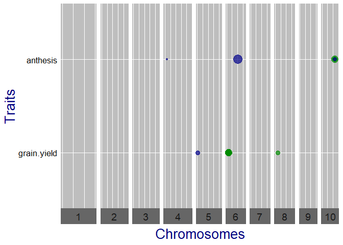

statgenGWAS is an R package for fast single trait Genome Wide Association Studies (GWAS).
statgenGWAS has extensive options for summarizing and visualizing results. The example below shows a selection of what is possible. For a full overview of all options it is best to read the vignette.
Installation
- Install from CRAN:
install.packages("statgenGWAS")- Install latest development version from GitHub (requires remotes package):
remotes::install_github("Biometris/statgenGWAS", ref = "develop", dependencies = TRUE)Examples
Example using the data from the European Union project DROPS. The same data is used in the vignette and described there in detail.
First get the data in the form required by the package, converting it to an object of class g(enomic)Data.
library(statgenGWAS)
## Read data.
data("dropsMarkers")
data("dropsMap")
data("dropsPheno")
## Add genotypes as row names of dropsMarkers and drop Ind column.
rownames(dropsMarkers) <- dropsMarkers[["Ind"]]
dropsMarkers <- dropsMarkers[colnames(dropsMarkers) != "Ind"]
## Add genotypes as row names of dropsMap.
rownames(dropsMap) <- dropsMap[["SNP.names"]]
## Rename Chomosome and Position columns.
colnames(dropsMap)[match(c("Chromosome", "Position"), colnames(dropsMap))] <- c("chr", "pos")
## Rename Variety_ID in phenotypic data to genotype.
colnames(dropsPheno)[colnames(dropsPheno) == "Variety_ID"] <- "genotype"
## Select relevant columns and convert data to a list.
dropsPhenoList <- split(x = dropsPheno[c("genotype", "grain.yield",
"grain.number", "seed.size",
"anthesis", "silking", "plant.height",
"tassel.height", "ear.height")],
f = dropsPheno[["Experiment"]])
## Create a gData object all data.
gDataDrops <- createGData(geno = dropsMarkers, map = dropsMap, pheno = dropsPhenoList)
## Remove duplicate SNPs from gDataDrops.
gDataDropsDedup <- codeMarkers(gDataDrops, impute = FALSE, verbose = TRUE)
#> Input contains 41722 SNPs for 246 genotypes.
#> 0 genotypes removed because proportion of missing values larger than or equal to 1.
#> 0 SNPs removed because proportion of missing values larger than or equal to 1.
#> 5098 duplicate SNPs removed.
#> Output contains 36624 SNPs for 246 genotypes.
## Run single trait GWAS for traits 'grain.yield' and 'anthesis' for trial Mur13W.
GWASDrops <- runSingleTraitGwas(gData = gDataDropsDedup,
trials = "Mur13W",
traits = c("grain.yield", "anthesis"))
## QQ plot of GWAS Drops.
plot(GWASDrops, plotType = "qq", trait = "grain.yield")
## Manhattan plot of GWAS Drops.
plot(GWASDrops, plotType = "manhattan", trait = "grain.yield")
## Qtl plot of GWAS Drops.
## Set significance threshold to 4 and normalize effect estimates.
plot(GWASDrops, plotType = "qtl", yThr = 4, normalize = TRUE)